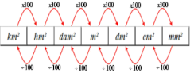

Sistema Internacional de unidades
O Sistema Internacional de Unidades (SI) é um padrão internacional de medição formado por uma base de unidades para sete grandezas da Física: massa, comprimento, tempo, corrente elétrica, temperatura termodinâmica, quantidade de substância e intensidade luminosa.
Esse padrão de sistema métrico foi criado na França no ano de 1960 durante a Conferência Geral de Pesos e Medidas (CGPM).
Uma grandeza é definida como aquilo que pode ser quantificado. A unidade é a representação estabelecida para designar as medidas das grandezas. Por exemplo, quilograma (kg) é a unidade atribuída à medição da grandeza massa no SI.
Medidas de Comprimento
As unidades de medidas de comprimento surgem para suprir a necessidade do ser humano de medir vários tipos de distâncias. Existem várias unidades de medidas de comprimento, a utilizada no sistema internacional de unidades é o metro, e seus múltiplos (quilômetro, hectômetro e decâmetro) e submúltiplos (decímetro, centímetro milímetro).
Além das unidades de medidas de comprimento apresentadas, existem outras como as que utilizam o corpo como parâmetro: o palmo, o pé, a polegada. Ainda, há aquelas que não são do sistema internacional, mas são utilizadas a depender da região, como a légua, a jarda, a milha e o ano-luz.
>
Unidades de coprimento
Medir a distância entre dois pontos de referência é uma tarefa executada pelos seres humanos desde as primeiras civilizações. Inicialmente utilizávamos objetos do dia a dia como referenciais, como cordas ou o próprio corpo humano. Adotado como medida fundamental para distância no sistema internacional de unidades, a comunidade científica utiliza o metro como referência para medir-se comprimentos.
>
Para medir-se distâncias maiores, existem o que chamamos de múltiplos do metro, que são:
decâmetro: 1 decâmetro corresponde a 10 metros, /
hectômetro: 1 hectômetro corresponde a 100 metros,/
quilômetro: 1 quilômetro corresponde a 1000 metros.
Para medir-se a distância, por exemplo, entre duas cidades, é mais conveniente usar-se quilômetros em vez de metros.
Para medir-se distâncias menores, existem os submúltiplos do metro, que são:
decímetro: 10 decímetros correspondem a 1 metro./
centímetro: 100 centímetros corresponde a 1 metro.
milímetro: 1000 milímetros corresponde a 1 metro.
Para objetos menores, como talheres, é mais conveniente utilizarmos como unidade de medida o centímetro em vez do metro.
Os múltiplos e submúltiplos do metro são representados por siglas:
quilômetro → km
hectômetro → hm
decâmetro → dam
metro → m
decímetro → dm
centímetro → cm
milímetro → mm.
Conversão de medidas de comprimento
Para realizar a conversão, precisamos construir a seguinte tabela, respeitando a ordem para os múltiplos e submúltiplos do metro.

Para realizar a conversão de uma unidade que está à esquerda para outra que está à direita, multiplicamos por 10 cada unidade de medida.
Exemplo:
Convertendo 1,2 m → cm
Ao analisar-se a tabela, de metro até centímetro, há duas unidades de medida
m→ dm → cm.
Então multiplicaremos por 10 cada uma.
1,2 · 10 · 10 = 1,2 · 100 = 120 cm
Para realizar conversões da direita para a esquerda, dividimos por 10 para cada unidade de medida.
Exemplo 2:
Convertendo 7 500 mm → dam
Ao analisar-se a tabela, de milímetro para decâmetro, há quatro unidades de medida.
dam ← m ← dm ← cm ← mm
7500 : 10 : 10 : 10 : 10 = 7500 : 10 000 = 0,75 dam
Outras unidades de medidas de comprimentos
Existem outras unidades de medidas de comprimento bastante comuns, sendo elas:
• Polegada: utilizada para medir-se tela de smartphone, notebook e demais aparelhos eletrônicos. É denotada geralmente pelo número seguido de duas aspas, por exemplo 40” (lê-se: 40 polegadas). Uma polegada corresponde a 2,54 cm.
• Palmo: utilizado para medir-se objetos um pouco maiores do que os que medimos com polegadas, e é pouco usado atualmente. Um palmo corresponde a 22,86 cm.
• Pé: utilizado até hoje para situar-se quanto à altura de um avião. Para representar uma distância medida em pés, colocamos o número seguido de uma aspa, por exemplo 30’(lê-se: 30 pés). Um pé corresponde a 30,48 cm.
• Jarda: utilizada nos EUA, sendo comum no futebol americano. Uma jarda corresponde a 0,9144 m.
• Légua: utilizada antigamente para medir-se distâncias maiores, a légua era bastante comum na navegação. Uma légua corresponde a 4,82803 quilômetros.
• Milha: utilizada para medir-se distâncias maiores, tendo sido bastante comum nos povos antigos. Uma milha corresponde a 1,60934 km.
• Ano-luz: utilizado para medir-se a distância entre astros, sendo muitas vezes confundido com medida de tempo. Um ano-luz corresponde a 9 460 730 472 580,8 km.